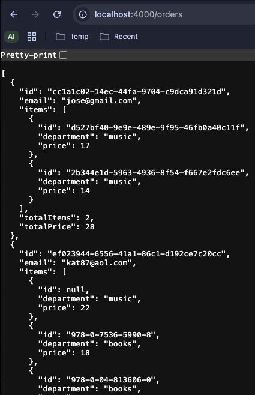
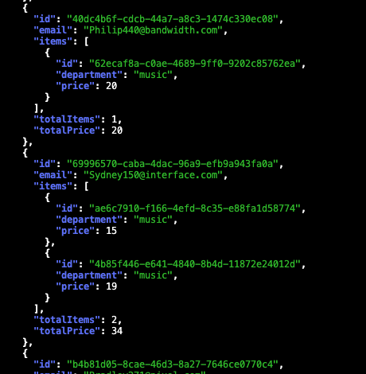
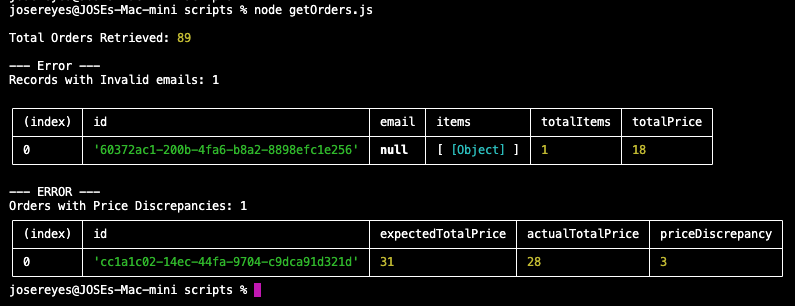

When people think about API testing, they usually jump straight to testing against a real backend environment. In reality, sometimes this isn't practical for a variety of reasons:
- The test data in the shared environment frequently changes.
- The backend is on a different development timeline than the frontend.
- Existing automation tests are hitting rate limits.
- Reproducing error scenarios involves a complex series of steps.
As an SDET, we have to find ways to unblock ourselves. Sometimes this involves being flexible and exploring alternative solutions.
This led me to experiement with "json-server".
Json-server is a simple tool that allows you to create a mock REST API using a JSON file as the data source.
It allows for quickly defining custom endpoints and responses, making it the perfect solution for the issue I was facing, considering the alternative
was spinning up a full backend service which would have been overkill for the task at hand.
While there are some limitations to be aware of when using json-server, such as the fact that it doesn't support advanced features like
authentication or complex data relationships, it can be a great option for testing specific scenarios or edge cases that may be difficult to
reproduce in a shared environment.
Having a sandbox that we fully control allows us to focus on the real task at hand, writing solid api layer tests.
If structured properly, all that would be required to point the test suite to the real backend is updating the baseURL.
In the next section, I'll walk through how to set up json-server and write some simple tests using Jest to validate the API responses.
Installation
Setting up JSON Server is pretty straightforward. You can install it globally using npm:
npm install -g json-serverDefining Endpoints and Response Payloads
Defining endpoints and response payloads is quite simple. The root directory contains a file called "db.json"
which serves as the data source for the API. Here is where you can define the endpoint and response payloads.
In the example below, I've defined an endpoint called "/orders" that returns a list of purchase orders.
Each order contains an id, email, list of items, item count and total price. Since these orders are business critical, I want to ensure
scenarios in which data is either missing or incorrect are flagged during testing. As a result, the orders in the example response
contain a variety of edge cases, such as missing email, missing item id and incorrect total price.
Save the following JSON object in the "db.json" file:
{
"orders": [
{
"id": "cc1a1c02-14ec-44fa-9704-c9dca91d321d",
"email": "jose@gmail.com",
"items": [
{
"id": "d527bf40-9e9e-489e-9f95-46fb0a40c11f",
"department": "music",
"price": 17
},
{
"id": "2b344e1d-5963-4936-8f54-f667e2fdc6ee",
"department": "music",
"price": 14
}
],
"totalItems": 2,
"totalPrice": 28
},
{
"id": "ef023944-6556-41a1-86c1-d192ce7c20cc",
"email": "kat87@aol.com",
"items": [
{
"id": null,
"department": "music",
"price": 22
},
{
"id": "978-0-7536-5990-8",
"department": "books",
"price": 18
},
{
"id": "978-0-04-813606-0",
"department": "books",
"price": 17
}
],
"totalItems": 3,
"totalPrice": 57
},
{
"id": "60372ac1-200b-4fa6-b8a2-8898efc1e256",
"email": null,
"items": [
{
"id": "21e77f80-2380-4c3e-aaf6-498a33e61bcf",
"department": "music",
"price": 18
}
],
"totalItems": 1,
"totalPrice": 18
}
]
}Starting the server
Run the following command in the terminal:
json-server --watch db.json
By default, this will start the server on port 3000.
If this conflicts with another service running on your machine, you can specify a different port using the "--port" flag.
For Example, to start the server on port 4000, you would run the following command:
json-server --watch db.json --port 4000
Once the server is running, you should see a message similar to the following in the terminal.
This indicates that the server is up and running and ready to accept requests.

Retrieving data from the mock server
Now that the server is up and running, we can make a get request to the orders endpoint to retreive the response payload.
Since I started the server on port 4000, the endpoint I will be sending a request to:
"http://localhost:4000/orders"
To quickly test this, enter the URL in your web browser.

Sending a cURL command from the terminal is also an option:

Validating the response
Ideally, I would use a testing framework like Jest to write a proper test suite with assertions, but for demonstration purposes, I'll create a script that iterates over the Orders response and prints a table with the problematic records.In your project, create a file called "getOrders.js" and copy/paste the code below. Make sure to update the URL in the fetch function if your JSON Server is running on a different port.
/*
- Send GET request to orders endpoint.
- Return error if response not successful.
- Retrieve json response.
- Print the total number of orders returned.
- If invalid emails are found or the sum of items does not match the total price,
print tables with the order details.
- Ideally, we should perform assertions, however since this is a demo script
and we know there are data issues, I've decided to simply print tables if
problematic records are found.
*/
import assert from "assert";
async function checkOrderRecords() {
try {
/* Make request, return response, print total record count */
const response = await fetch("http://localhost:4000/orders");
if (!response.ok) {
throw new Error(`HTTP error! Status: ${response.status}`);
}
const data = await response.json();
console.log("\nTotal Orders Retrieved:", data.length);
/* Records that contain invalid email address. */
const emailRegex = /^[^\s@]+@[^\s@]+\.[^\s@]+$/;
const invalidEmails = data.filter((order) => !emailRegex.test(order?.email));
if (invalidEmails.length > 0) {
console.log(`\n--- Error ---\nRecords with Invalid emails: ${invalidEmails.length}\n`);
console.table(invalidEmails);
}
/* Records where the sum of the item price does not equal the totalPrice */
const sumOfItems = data
.map((order) => {
const sum = order.items.reduce((sum, item) => sum + item.price, 0);
return {
id: order.id,
expectedTotalPrice: sum,
actualTotalPrice: order.totalPrice,
priceDiscrepancy: sum - order.totalPrice
};
})
.filter((order) => order.expectedTotalPrice !== order.actualTotalPrice);
if (sumOfItems.length > 0) {
console.log(`\n--- ERROR ---\nOrders with Price Discrepancies: ${sumOfItems.length}`);
console.table(sumOfItems);
}
/* Assertions to be used in CI Pipelines
assert(invalidEmails.length === 0, `${invalidEmails.length} order(s) with invalid email address.`);
assert(sumOfItems.length === 0, `${sumOfItems.length} order(s) with Item sum & totalPrice mismatch.`);
*/
} catch (error) {
console.error("Error fetching orders:", error);
}
}
checkOrderRecords();Run the script in the terminal via:
node getOrders.js
The following tables are returned, displaying the records in which errors were discovered.
